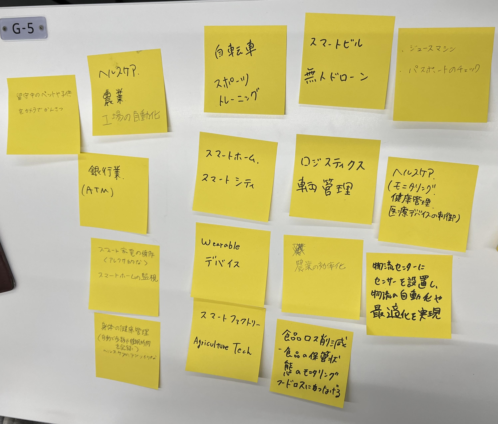
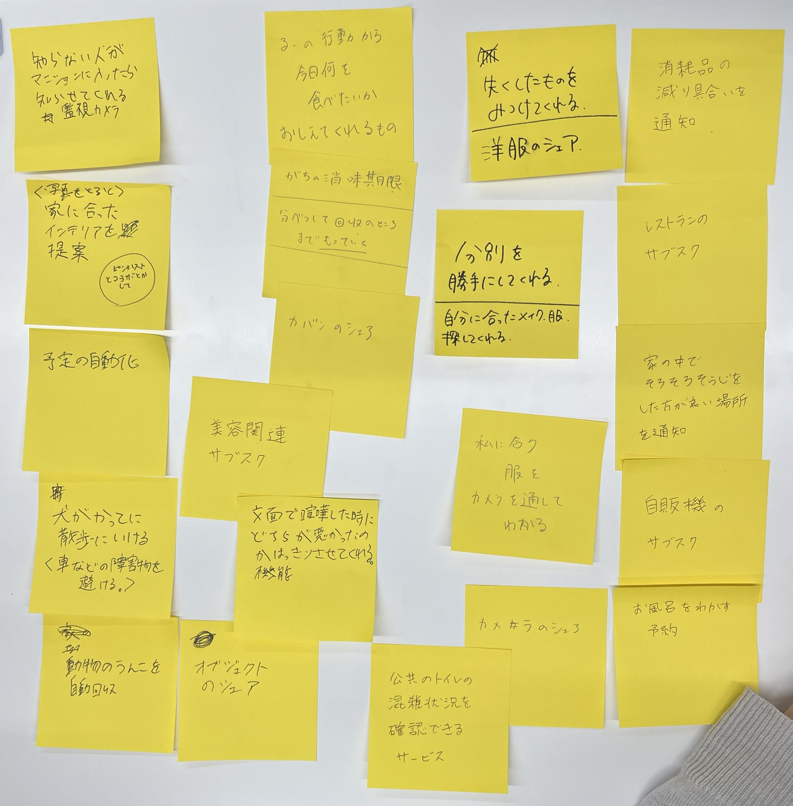
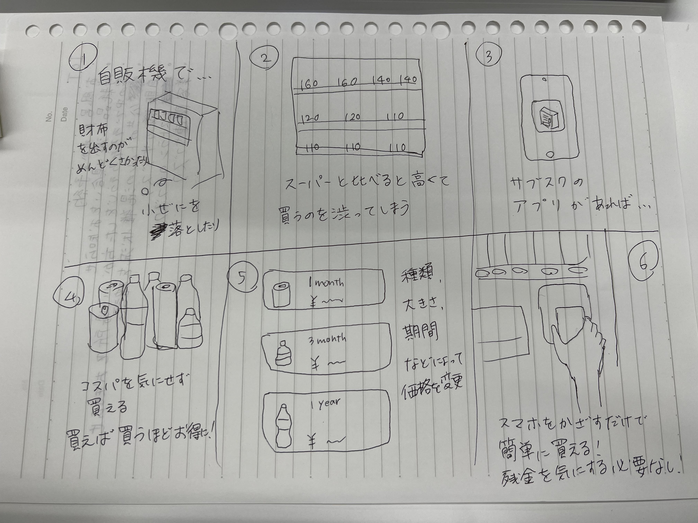
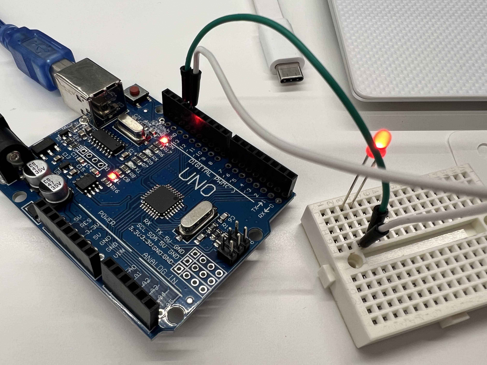

第１回
IoTに関して
1.IoTとは何か
『IoTは、「Internet of Things」の略で、日本語で「モノのインターネット」と呼ばれています。IoTとは、物理的なデバイスや機器などにインターネット接続を行い、データの収集や制御などの機能を実現する技術や概念です。
具体的には、センサーやアクチュエータなどのデバイスが、インターネット経由でクラウド上のサーバーと通信し、データを収集・送信・分析することで、様々なサービスやシステムの実現が可能になります。例えば、スマートホームやスマートシティ、自動車の自動運転技術などが挙げられます。
IoTは、ビッグデータや人工知能、クラウドコンピューティングなどの技術と組み合わせることで、新たなビジネスモデルやサービスの創出につながると期待されています。』（ChatGPTより）
ChatGPT

IoTが使われている具体例
2.IoTで何ができそうか？グループワークした内容（ポストイット画像）

3.IoTで何ができそうか？自分で考えたアイディア（スケッチ）

マイコンボード（Arduino）の体験
